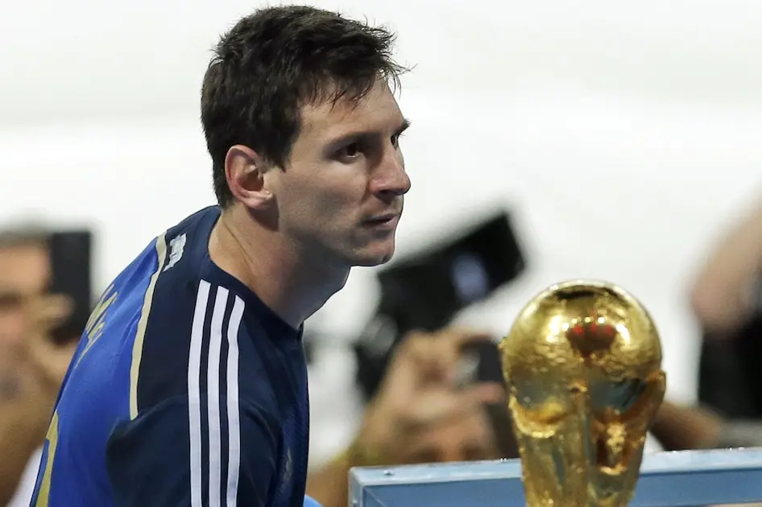
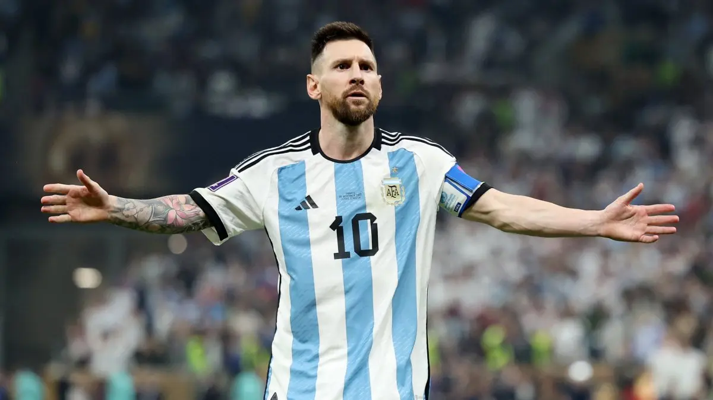

Argentina · Lionel Messi
The Last Summer
We Borrowed.
Mùa hè cuối cùng chúng ta được mượn anh từ thời gian, trước khi tiếng còi vang lên và tất cả buộc phải chấp nhận rằng điều đẹp đẽ nhất không phải lúc nào cũng cần tồn tại mãi mới trở nên vĩnh cửu.
Có lẽ câu chuyện của Lionel Messi cùng Argentina đáng lẽ đã khép lại từ bốn năm trước, trong một đêm ở Lusail, khi anh bước lên bục cao nhất, mặc chiếc áo choàng đen trên vai, ôm chiếc cúp vàng vào lòng rồi từ từ nâng nó lên giữa một biển người đã chờ khoảnh khắc đó lâu tới mức chính họ cũng không còn nhớ mình bắt đầu chờ từ khi nào.
Đó là cái kết đẹp tới mức người ta không cần sửa thêm bất cứ điều gì.
Sau tất cả những trận chung kết đã mất, những lần cúi đầu, những giọt nước mắt, những năm tháng phải chứng minh rằng mình thật sự yêu quê hương, Messi cuối cùng cũng đứng trên đỉnh thế giới trong màu áo xanh trắng, không còn là đứa trẻ rời Rosario quá sớm, không còn là người đàn ông bị nhìn bằng ánh mắt nghi ngờ sau mỗi lần Argentina thất bại, mà là người đã mang giấc mơ lớn nhất trở về cho một đất nước từng yêu anh bằng một tình yêu vừa mãnh liệt, vừa tàn nhẫn tới mức có lúc gần như làm cả hai phía lạc mất nhau.


Nếu Messi rời đi ngay đêm đó, có lẽ không ai trách anh.
Anh đã trả hết những món nợ mà thật ra chưa bao giờ thuộc về mình, đã lấp đầy mọi khoảng trống mà người ta từng dùng để làm nhỏ đi sự vĩ đại của anh, đã biến những câu hỏi kéo dài suốt gần hai thập kỷ thành một khoảnh khắc mà không lời giải thích nào còn cần thiết. Câu chuyện đã trọn vẹn, sân khấu đã sáng lên ở đúng đoạn cuối, và người đàn ông từng chịu quá nhiều nỗi đau trong màu áo Argentina cuối cùng cũng được phép bước khỏi đó trong tiếng hát, trong nước mắt, trong vòng tay của cả một quê hương đã thôi hỏi anh còn thiếu điều gì.
Nhưng Messi vẫn ở lại.
Không phải vì còn một danh hiệu cần lấy thêm, cũng không phải vì lịch sử vẫn cần một bằng chứng khác để nhớ tên anh, mà có lẽ chỉ vì có những tình yêu, sau khi đã đi qua quá nhiều năm tháng để cuối cùng tìm được nhau, người ta không biết phải nói lời chia tay ngay lúc mọi thứ đang đẹp nhất bằng cách nào. Anh vẫn mặc chiếc áo đó, vẫn bước ra sân dưới những tiếng hát đó, vẫn đứng giữa những người đồng đội đã cùng mình đi qua một hành trình tưởng như không thể, và chúng ta cũng vui vẻ chấp nhận sự hiện diện của anh như thể đó là điều hiển nhiên, như thể Lionel Messi sẽ vẫn còn ở đó mỗi lần Argentina tập trung, như thể thời gian vì từng chịu thua anh quá nhiều lần rồi sẽ tiếp tục rộng lòng thêm một chút nữa.
World Cup 2026 vì vậy chưa bao giờ chỉ là một giải đấu khác.
Nó giống như một mùa hè được mượn thêm từ thời gian, một đoạn đời nằm ngoài cái kết vốn đã hoàn chỉnh, nơi mỗi lần Messi chạm bóng đều mang theo cảm giác vừa quen thuộc, vừa mong manh, bởi tất cả chúng ta đều hiểu rằng mình không còn đang nhìn một câu chuyện bắt đầu, cũng không còn chờ một cuộc cứu rỗi nào nữa, mà chỉ đang cố giữ lấy những hình ảnh cuối cùng của một điều đẹp đẽ đã ở bên bóng đá quá lâu.
Và Messi vẫn cho chúng ta lý do để giả vờ rằng mùa hè đó chưa cần kết thúc.
Argentina đã đi qua những thời khắc tưởng như sắp bị đẩy khỏi giải đấu, để rồi số 10 đó lại xuất hiện, bằng một bàn thắng muộn, một đường chuyền vừa đủ, một khoảnh khắc mà thời gian trên sân như chậm lại đúng một nhịp để anh nhìn thấy thứ không ai khác nhìn thấy. Mỗi lần như vậy, chúng ta lại tự thuyết phục mình rằng có lẽ anh vẫn còn một phép màu cuối cùng, rằng tuổi ba mươi chín chỉ là một con số, rằng nếu người đang đứng đó là Messi thì câu chuyện vẫn có thể tiếp tục được bẻ cong theo một cách mà chỉ riêng anh hiểu.
Có lẽ chúng ta chưa bao giờ thật sự cần anh vô địch thêm lần nữa.
Điều chúng ta cần chỉ là một lý do để tin rằng nếu Messi vẫn còn có thể kéo Argentina trở lại từ những khoảnh khắc tưởng như đã hết, thì ngày chia tay vẫn chưa thật sự tới. Chỉ cần anh vẫn còn bước ra sân, vẫn còn đứng trước một quả đá phạt, vẫn còn nhận bóng giữa những khoảng trống tưởng như không tồn tại, chúng ta vẫn có thể trì hoãn cái ngày phải nhìn vào một đội hình Argentina mà không còn tìm kiếm chiếc áo số 10 đó trước tiên.
Rồi trận chung kết diễn ra, và lần này phép màu không tới.
Tây Ban Nha ghi bàn trong hiệp phụ, Argentina cố gắng lao lên bằng tất cả những gì còn lại, còn Messi vẫn ở đó, vẫn đi tìm một khoảng trống, vẫn chờ một trái bóng có thể mở ra thêm một lần cứu rỗi, nhưng thời gian cuối cùng không dừng lại cho anh nữa. Không có một cú chạm cuối cùng làm cả sân vận động nổ tung, không có một đường chuyền xuyên qua tất cả, không có khoảnh khắc mà lịch sử chịu quay đầu nhìn lại người đàn ông đã làm nó thay đổi quá nhiều lần.
Chỉ có tiếng còi mãn cuộc, rất ngắn, nhưng đủ để khép lại cả một mùa hè mà sâu trong lòng, chúng ta vẫn luôn biết mình không thể giữ mãi.
Người Nhật có một ý niệm mang tên mono no aware, nói về nỗi buồn nảy sinh khi ta nhận ra mọi thứ đẹp đẽ đều rồi sẽ trôi qua, và chính vì không thể tồn tại mãi nên từng khoảnh khắc của nó mới trở nên quý giá tới vậy. Có lẽ không có gì diễn tả Messi ở World Cup 2026 rõ hơn cảm giác đó, bởi điều làm người ta đau không chỉ là việc Argentina không thể bảo vệ chiếc cúp, mà là ý thức rằng mỗi bước chân của anh trên sân, mỗi lần anh đưa tay chỉnh lại chiếc băng đội trưởng, mỗi lần máy quay tìm tới gương mặt đó giữa đám đông, đều có thể là một trong những lần cuối cùng chúng ta được nhìn thấy nó trong khung cảnh này.
Suốt nhiều năm, chúng ta đã nghĩ rằng Messi làm bóng đá đẹp vì anh có thể làm những điều không ai khác làm được, nhưng có lẽ tới lúc này mới hiểu rằng cái đẹp còn nằm ở việc mọi thứ anh làm rồi cũng phải kết thúc. Không có phép màu nào tồn tại mãi, không có mùa hè nào kéo dài vô tận, và ngay cả người đã khiến thời gian trông như ngừng lại mỗi khi trái bóng nằm dưới chân mình, sau cùng cũng phải bước tới ngày mà thời gian bắt đầu đòi lại những gì nó từng cho thế giới mượn.
Thất bại trước Tây Ban Nha không làm câu chuyện của Messi bớt trọn vẹn, bởi cái kết hoàn hảo đã được viết ở Lusail từ bốn năm trước. Nhưng chính vì vậy mà nỗi buồn lần này lại mang một hình dạng khác, không dữ dội như một giấc mơ bị cướp mất, không tuyệt vọng như những ngày Argentina và Messi còn chưa tìm được nhau, mà âm thầm hơn, giống cảm giác khi ta đứng trước một buổi chiều rất đẹp, nhìn ánh sáng dần tắt trên những mái nhà, biết rằng mình không mất đi điều gì ngay trong khoảnh khắc đó, nhưng cũng biết mình sẽ không bao giờ được sống lại đúng buổi chiều này thêm lần nữa.
Messi đã không trở lại World Cup 2026 để sửa chữa di sản của mình, bởi anh không còn gì cần sửa. Anh trở lại như một người đã có được tất cả, nhưng vẫn muốn bước thêm một đoạn với quê hương, với những người đồng đội, với hàng triệu con người đã đi từ chỗ nghi ngờ, giận dữ, tổn thương nhau, rồi cuối cùng học được cách yêu anh mà không cần buộc anh phải tiếp tục chứng minh điều gì.
Và có lẽ chúng ta cũng đã đi cùng anh vì cùng một lý do.
Không phải để chờ thêm một chiếc cúp, mà để được trì hoãn lời từ biệt. Không phải để đòi hỏi thêm một phép màu, mà để nhìn anh thêm một lần giữa màu áo đó, nghe khán đài hát tên anh thêm một lần, và tự dối lòng rằng chỉ cần trận đấu tiếp theo vẫn còn trên lịch, mọi thứ vẫn chưa thật sự khép lại.
Nhưng mùa hè nào rồi cũng phải kết thúc.
Argentina rời trận chung kết mà không có chiếc cúp trong tay, Messi rời mặt cỏ với nỗi đau của một người đã tiến rất gần tới thêm một lần bất tử, còn chúng ta cuối cùng cũng phải trả lại cho thời gian những ngày tháng đã được mượn thêm, trả lại những khoảnh khắc muộn, những lần số 10 đó làm cả một đất nước tin rằng mọi thứ vẫn còn có thể, trả lại niềm tin ngây thơ rằng có lẽ anh sẽ cứ ở đó mãi, chỉ vì bóng đá chưa bao giờ trông giống chính nó tới vậy khi trái bóng nằm dưới chân anh.
The Last Summer We Borrowed.
World Cup 2026 không phải câu chuyện Lionel Messi không thể viết thêm một cái kết hoàn hảo, mà là mùa hè cuối cùng chúng ta được mượn anh từ thời gian, trước khi tiếng còi vang lên và tất cả buộc phải chấp nhận rằng điều đẹp đẽ nhất không phải lúc nào cũng cần tồn tại mãi mới trở nên vĩnh cửu.
Có những con người không biến mất khi họ bước khỏi sân, bởi họ đã ở lại trong cách chúng ta nhớ về bóng đá, trong những buổi tối từng làm mình bật khóc, trong những khoảnh khắc mà ta biết nhiều năm sau vẫn sẽ kể lại bằng cùng một giọng run run như ngày đầu tiên.
Và có lẽ, khi mùa hè cuối cùng khép lại, điều còn sót lại không phải chỉ là tiếc nuối vì Messi đã không thể nâng thêm một chiếc cúp, mà là lòng biết ơn rất buồn của những người cuối cùng cũng hiểu rằng mình đã được ở đó, đã được nhìn thấy anh thêm một lần, đã được sống trong những ngày tháng vốn dĩ không còn thuộc về câu chuyện, nhưng vẫn được thời gian rộng lòng cho mượn.